| mode | 说明 |
|---|---|
| S_IRWXU | 用户(所有者)读、写、执行 |
| S_IRUSR | 用户(所有者)读 |
| S_IRWUSR | 用户(所有者)写 |
| S_IRXUSR | 用户(所有者)执行 |
| S_IRWXG | 用户组读、写、执行 |
| S_IRGRP | 用户组读 |
| S_IWGRP | 用户组写 |
| S_IXGRP | 用户组执行 |
| S_IRWXO | 其他读、写、执行 |
| S_IROTH | 其他读 |
| S_IROTH | 其他写 |
| S_IROTH | 其他执行 |
| S_ISUID | 执行时设置用户id |
| S_ISGID | 执行时设置用户组id |
| STICKY | 只有文件所有者和root可以删除 |
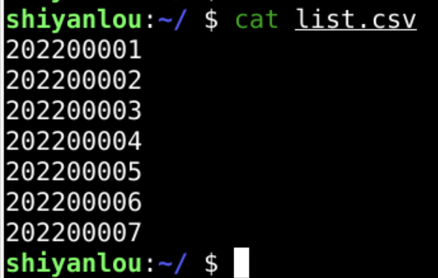
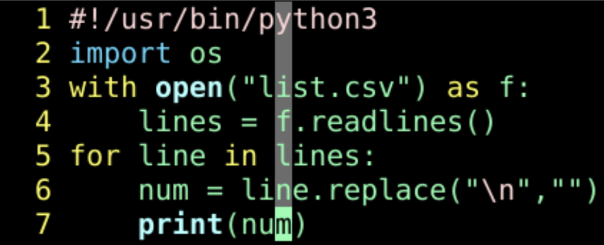
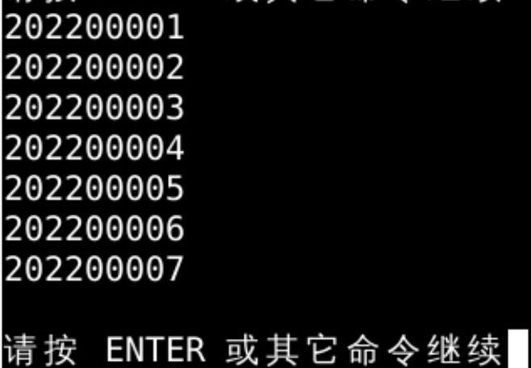
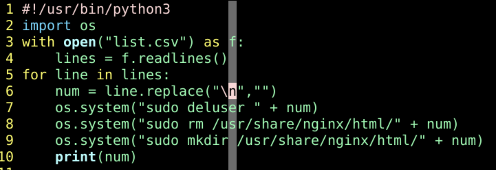
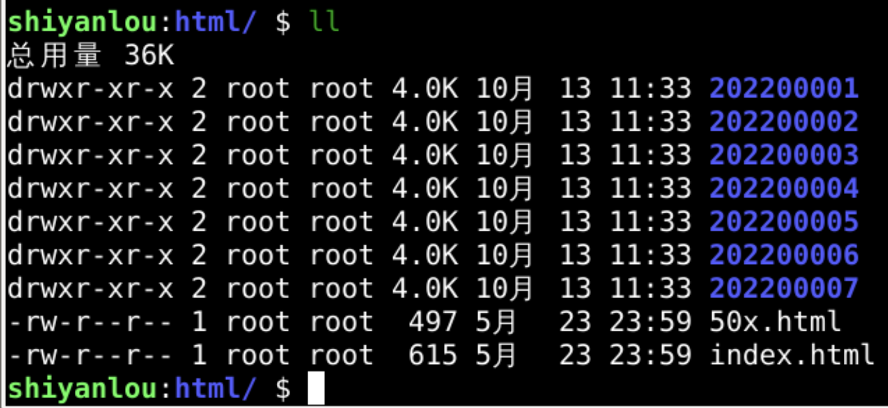
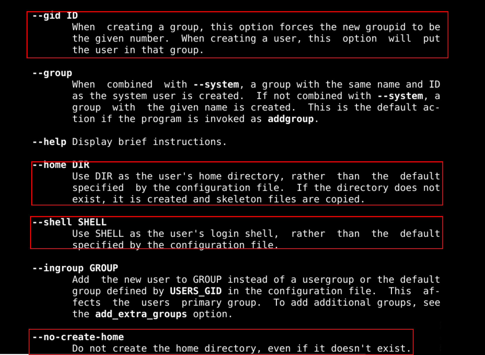
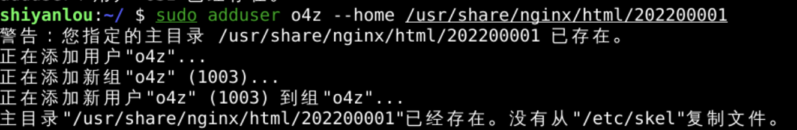
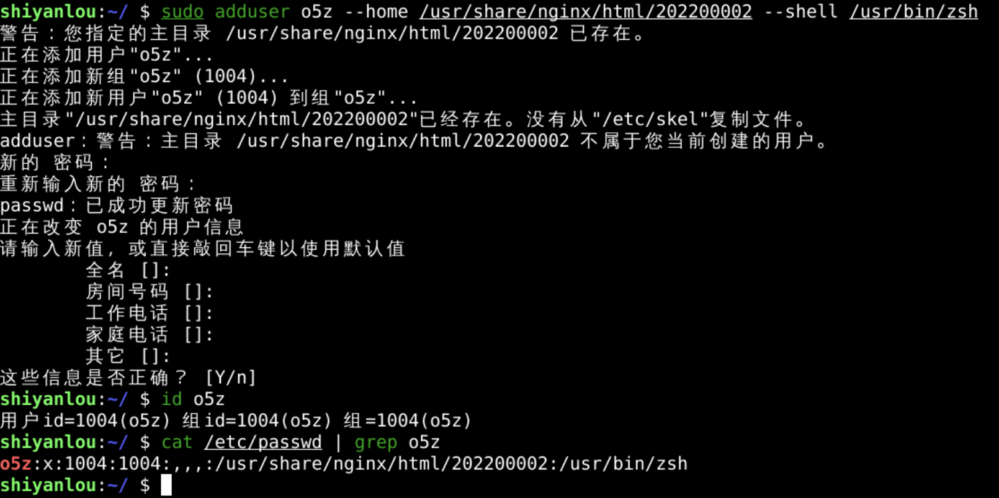
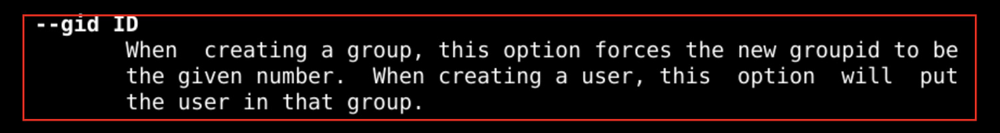
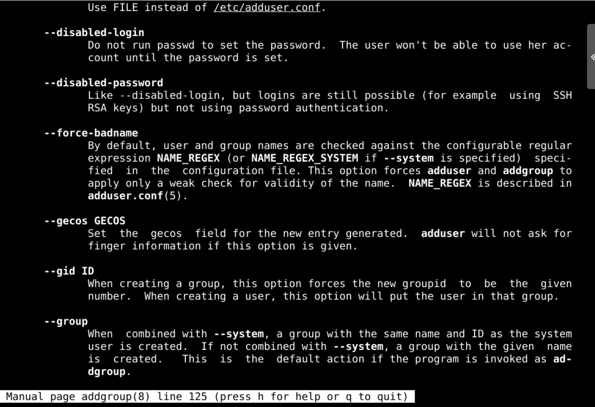
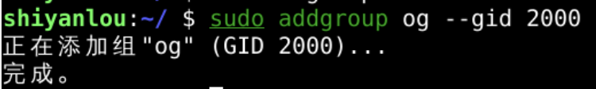
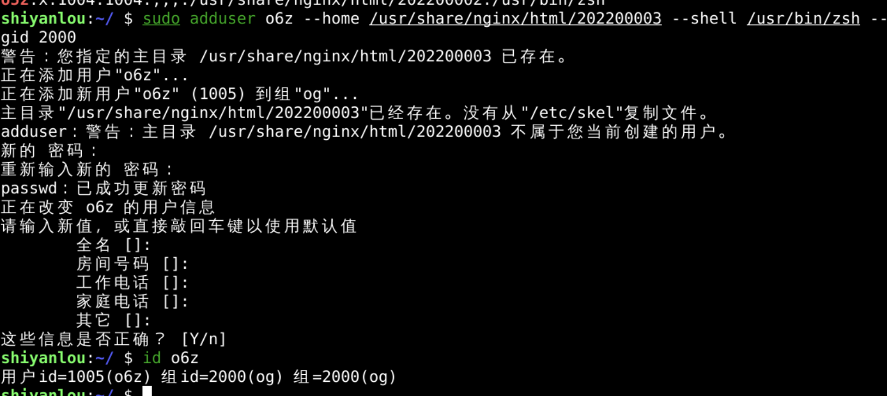
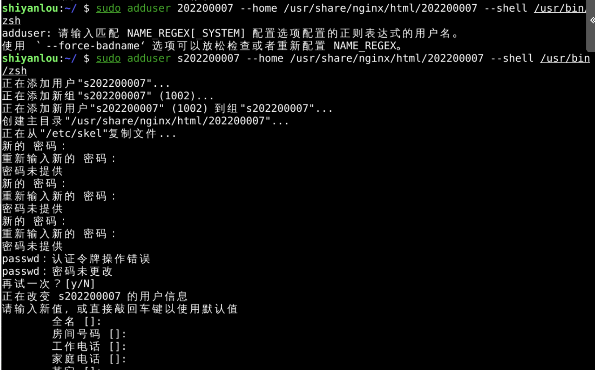
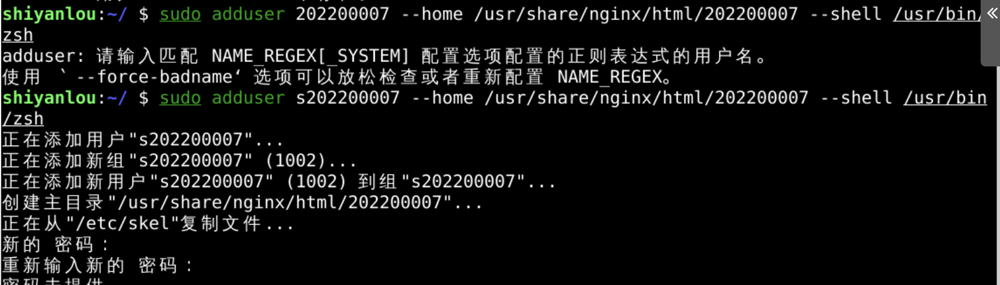
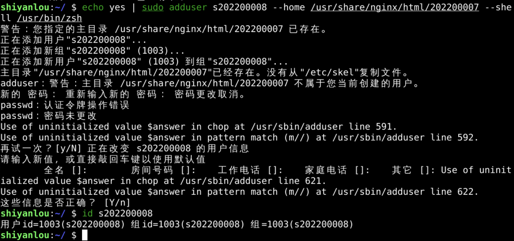
echo yes | sudo adduser num --home /usr/share/nginx/html/ num --shell /usr/bin/zsh
还需要设置密码才能登陆
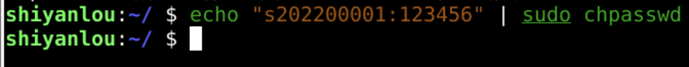
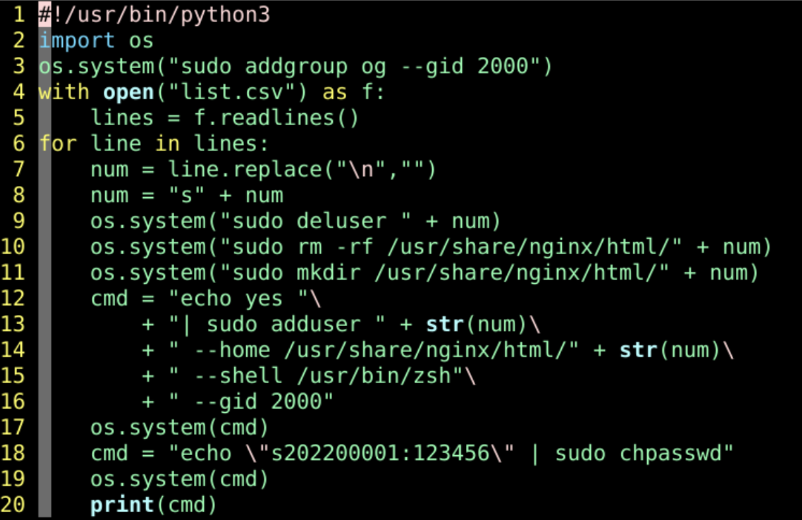
#!/usr/bin/python3
import os
os.system("sudo addgroup og --gid 2000")
with open("list.csv") as f:
lines = f.readlines()
for line in lines:
num = line.replace("\n","")
num = "o" + num
os.system("sudo deluser " + num)
os.system("sudo rm -rf /usr/share/nginx/html/" + num)
os.system("sudo mkdir /usr/share/nginx/html/" + num)
cmd = "echo yes "\
+ "| sudo adduser " + str(num)\
+ " --home /usr/share/nginx/html/" + str(num)\
+ " --shell /usr/bin/zsh"\
+ " --gid 2000"
os.system(cmd)
cmd = "echo \"" + num + ":oeasy\" | sudo chpasswd"
os.system(cmd)
print(cmd)
cmd = "cp -r /root/.zshrc /usr/share/nginx/html/" + num
os.system(cmd)
cmd = "cp -r /root/.oh-my-zsh /usr/share/nginx/html/" + num
os.system(cmd)
cmd = "cp -r /root/.vimrc /usr/share/nginx/html/" + num
os.system(cmd)
cmd = "cp -r /root/.cache /usr/share/nginx/html/" + num
os.system(cmd)
cmd = "chmod -R a+w /usr/share/nginx/html/"
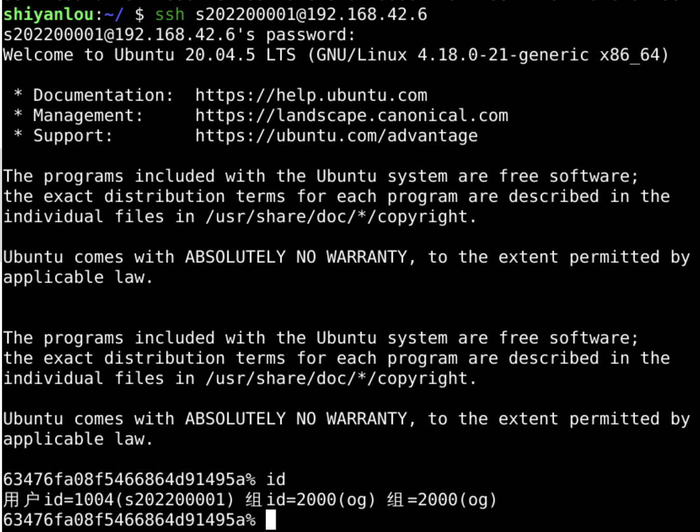